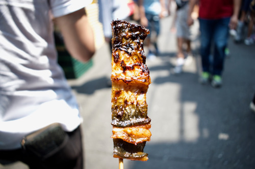

Recipes

Beef Sukiyaki
View recipeBeef Sukiyaki
Ingredients
- ½ cup soy sauce
- ¼ cup sugar
- ½ dashi or beef broth
- 2 tablespoons vegetable oil
- 1 pound beef tenderloin, sliced into thin strips
- 10 scallions, cut into 2-inch pieces (both and green and white parts)
- 4 stalks celery, sliced on an angle, in ½ -inch pieces
- 12 mushroom caps, sliced
- 8 ounces tofu or bean curd, cut into bite-sized cubes
- 1 can bamboo shoots, drained
- 4 cups rice, cooked
Procedure
- Mix soy sauce, sugar, and dashi or broth in a bowl and set aside.
- Arrange beef and vegetables on a large platter.
- Heat an electric skillet 300 ℉ or heat a frying pan over medium-high heat. Add oil and heat.
- Add the meat and brown for 2 minutes.
- Add the vegetables and the tofu, including the bamboo shoots, placing each on its own part of the skillet
- Add the sauce and cook mixture for 6 to 7 minutes, turning gently to prevent burning and keeping all ingredients separate from each other. Serve at once over rice.

Broiled Salmon
View recipeBroiled Salmon
Ingredients
- 4 salmon steaks
- ¼ cup white soybean paste or shiromiso
- 1 teaspoon sugar
- 2 Tablespoons low-sodium soy sauce
- 2 Tablespoons sake
- 2 green onions, thinly-sliced
Procedure
- Place salmon under broiler for 5 minutes each side.
- Mix soybean paste, sugar, soy sauce, and sake together in a bowl.
- Spread mixture on salmon steaks and broil another 2 minutes per side.
- Garnish with the sliced green onions and serve immediately.

Chicken Teriyaki
View recipeChicken Teriyaki
Ingredients
- ½ cup soy sauce
- 3 Tablespoons sugar
- 1 teaspoon fresh ginger root, grated
- 3 Tablespoons sesame seeds
- 1½ to 2 pounds skinless, boneless chicken breast, cut into small serving pieces
Procedure
- Preheat oven to 375 ℉
- Combine soy sauce, sugar, ginger root, and sesame seeds in a large bowl.
- Place chicken in a baking dish and pour sauce over it
- Bake for 45 minutes. Turn chicken about every 15 minutes, coating with sauce in the process.
Miso Soup
View recipeMiso Soup
Ingredients
- 2 scallions
- ¼ pound tofu
- 1¼ cups dashi or 1 chicken bouillon cube, dissolved in 1 cup boiling water
- 2 Tablespoons red miso
Procedure
- Wash the scallions and cut the green parts into 1½inch lengths.
- Cut the tofu into small cubes and place the scallions and tofu in soup bowls.
- Boil the dashi in a saucepan.
- Put a little of the boiling liquid in a bowl and mix with the miso.
- Pour back into the saucepan, then ladle into the soup bowls.
- Serve immediately.

Onigiri
View recipeOnigiri
Ingredients
- 2 cups cooked rice
- Salt
- Pickled plums, cut into small, bite-sized pieces
- Cooked salmon, cut into small, bite-sized pieces
- Dry seaweed sheets or nori, cut into strips
Procedure
- Cook rice according to directions on package. Allow to cool slightly.
- Have a bowl of lukewarm water handy.
- Dip clean hands into water, and then sprinkle salt on wet hands.
- Place a small mound of rice in the palm of your hand.
- Press a piece of pickled plum or cooked salmon into the mound of rice.
- Toss the mound back and forth between wet, salted hands to form a triangular mound, with the filling item in the center.
- Wrap mound in a dry seaweed strip.

Ramen
View recipeRamen
Ingredients
- 1 package ramen noodle soup
- Vegetables to add to soup
- 1 carrot, cut into very thin sticks, about 2 inches long
- 1 scallion, chopped
- Daikon radish, cut into very thin sticks, about 2 inches long
- 1 mushroom, sliced thin
- 3 snow pea pods
- 1 Chinese cabbage leaf, shredded
Procedure
- Make soup according to package directions.
- Place up to four of the add-ins into a large soup bowl.
- Carefully pour hot broth and noodles over vegetables
- Use chopsticks to eat the vegetables and noodles, and drink the broth from the bowl.

Sushi
View recipeSushi
Ingredients
- Small bamboo mat or makisu for preparing sushi
- Dry seaweed sheets or nori
- Bowl of water to which 1 Tablespoon vinegar has been added
- Wasabi
- Strips of avocado, cucumber, carrot, or other vegetable
- Cooked shrimp or crab meat
Procedure
- Place a sheet of nori, shiny side down, on the makisu.
- Wet your one hand in the bowl of vinegar water, and use it to scoop up a ball of rice.
- Spread the rice out in an even layer on one side of the nori.
- Sprinkle a line of wasabi down the center of the rice.
- Arrange the strips of vegetables and seafood over the line of wasabi.
- Using the mat to support the nori , lift one end of the mat to gently roll the nori over the rice and other ingredients.
- Continue rolling until a long cylinder is formed, completely encased in nori.
- Slice and serve immediately.

Unagi Stick
View recipeUnagi Stick
Ingredients
- 2 eel fillets
- 1 ½ tablespoons sake
- ¼ cup mirin
- 2 ½ tablespoons granulated sugar
- ¼ cup soy sauce
Procedure
- Combine mirin and sake in a small saucepan and bring to a boil to evaporate alcohol.
- Add sugar. Stir until completely dissolved.
- Add soy sauce. Bring to a boil.
- Reduce the heat and continue to simmer for about 10 minutes or until thickened. Remove from heat.
- Preheat grill. Butterfly the Unagi so that it can be grilled flat.
- Place on the grill with the skin down.
- Close the lid and grill for about 3 minutes. Flip and grill for another 3 minutes.
- Baste the skin with the Unagi sauce. Flip. Grill on high for about 1 minute.
- Baste the meat. Flip. Grill on high for about 1 minute.
- Remove from the grill and serve on a stick.
Yakisoba
View recipeYakisoba
Ingredients
- 2 to 3 medium-sized shiitake mushrooms
- 8 ounces fresh ramen or 6 ounces dried noodles
- 3 Tablespoons vegetable oil
- 1 small to medium-sized onion, chopped
- 2 teaspoons ginger root, minced
- 2 cups green cabbage leaves, coarsely chopped
- 1 Tablespoon mirin
- 2 to 3 teaspoons soy sauce
- 2 to 3 dashes black pepper
- Salt, to taste
Procedure
- Soak mushrooms in a bowl of warm water for 30 minutes.
- Dry mushrooms. Cut off stems and discard. Slice mushrooms thinly.
- Bring 3 quarts of water to a boil in a large pot and add ramen. Cook 1 to 2 minutes or until tender yet firm.
- Rinse ramen; drain well. Toss with 1 Tablespoon of the oil; set aside.
- Heat remaining 2 Tablespoons oil in a wok or large skillet over medium to high heat.
- Add onion and ginger root and stir-fry for 2 minutes
- Add cabbage and mushrooms; stir-fry 3 minutes. Sprinkle with mirin. Stir-fry 1 minute more.
- Add ramen; toss until hot. Season with soy sauce, pepper, onions, and salt.
- Shrimp, ham, chicken, or other tempura can be added.

Yakitori
View recipeYakitori
Ingredients
- 2 skinless, boneless chicken breasts
- 2 small leeks
- 2 teaspoons sugar
- 4 Tablespoons soy sauce
- Bamboo skewers, soaked in water for 30 minutes prior to using
Procedure
- Cut chicken into bite-sized chunks.
- Wash leeks, remove the roots, and cut into ¾ inch lengths.
- Slide the chicken and leeks onto bamboo skewers.
- In a bowl, mix the sugar and soy sauce together.
- Spoon a little of this mixture over the chicken skewers.
- Broil for 5 minutes.
- Turn the skewers over, spoon on some more sauce, and cook for 5 more minutes.
- Serve hot and eat with your fingers.